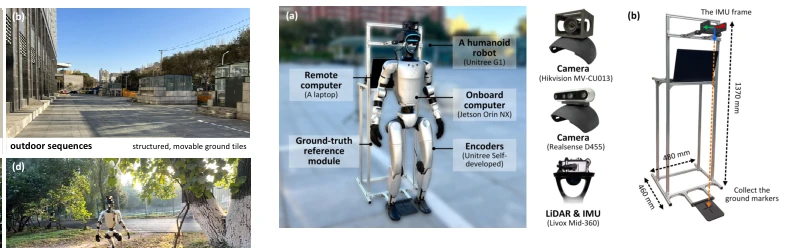
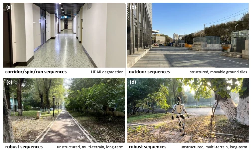
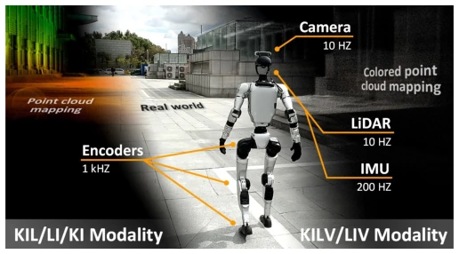
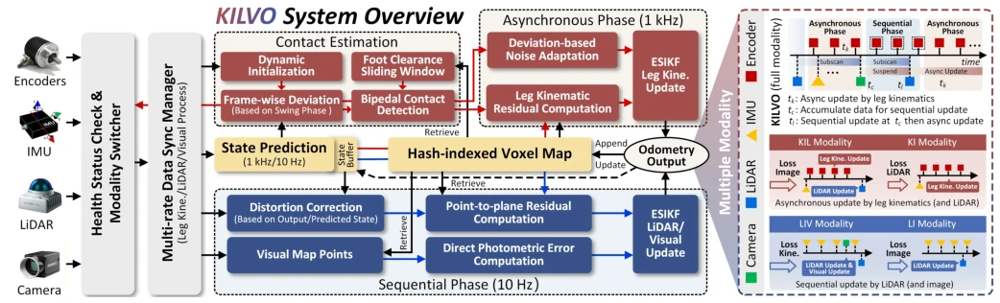
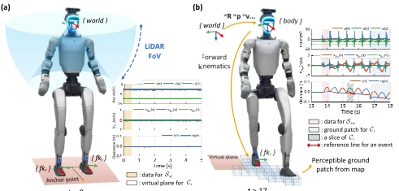
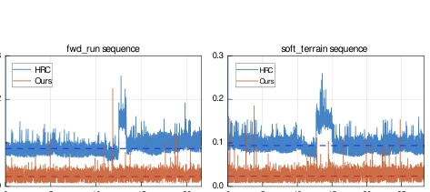
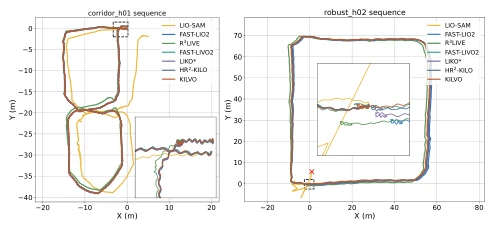
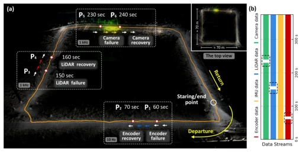
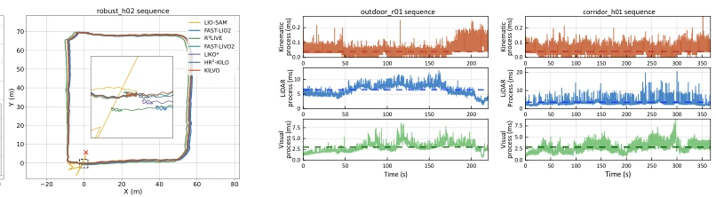
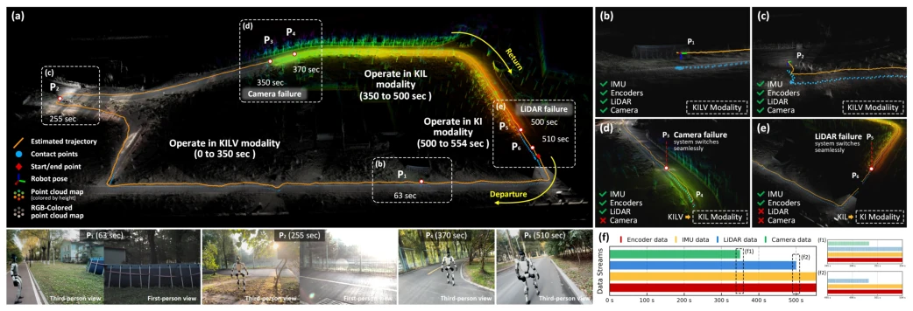

This paper equips humanoid robots with four modalities of sensors, attempting to fuse them all using ESIKF. The highlights are the "asynchronous-sequential hybrid update" and "multi-modal adaptation"; sensors can automatically degrade upon failure, which is superior to many approaches that insist on tight coupling. Contact estimation relies on kinematics and maps without force sensors, significantly saving hardware. However, a critique is that while the 1kHz output appears impressive, the actual processing overhead for handling four modalities is significant; Table VI shows an average of 14ms, which is considerably slower than pure LIO. Moreover, although contact estimation is more stable than DCE on soft ground or during slipping (Fig 6), lacking true force feedback means long-term drift still relies on external perception to correct. Overall, it is a highly practical engineering system, but its theoretical upper bound may not surpass some end-to-end large models, and it remains dependent on initialization and map quality.
The vertical chain structure of humanoid robots leads to low contact redundancy and unstable motion, making sensors prone to failure due to vibration or collision [1]. Traditional proprioceptive odometry (e.g., [2], [3]) is fast but prone to drift, particularly with yaw and position being unobservable. Existing fusion methods (e.g., [7], [8]) mostly assume continuous sensor operation and lack resilience to data interruptions. Contact estimation often relies on additional force sensors [9] or learning-based methods, which incur high costs and exhibit poor generalization. This paper aims to address localization failure caused by sensor degradation in complex environments and reduce hardware dependency. Furthermore, lighting changes and dynamic objects in real-world scenarios further exacerbate SLAM difficulties, making it challenging for existing systems to balance real-time performance and robustness.

Fig. 5. The humanoid robot with the equipment used for the real-world experiments. (a) Robot platform and sensor setup. (b) Mechanical module for recording relative ground truth.

Fig. 4. Environments of the real-world experiments. (a) presents an indoor corridor with LiDAR degradation. (b) is the outdoor environment with movable ground tiles. (c) and (d) are the unstructured outdoor environments, including asphalt roads, rubber roads, brick pavements, and dirt paths.
方法Method
核心是异步 - 顺序混合 ESIKF。IMU 负责高频预测，腿部运动学在异步相位（1kHz）提供本体约束，LiDAR 和视觉在顺序相位（10Hz）依次更新几何与光度误差。创新点在于多模态自适应：监测数据完整性与可靠性，传感器失效时无缝切换模态（如 KIL, KI, LIV），避免系统崩溃。接触估计模块复用运动学、惯性和地图线索，通过冲击偏差和脚底间隙检测接触，无需额外传感器。统一哈希体素地图同时服务于定位与接触估计，减少冗余。状态更新采用迭代卡尔曼滤波，确保非线性误差收敛。
The core is an asynchronous-sequential hybrid ESIKF. The IMU is responsible for high-frequency prediction, leg kinematics provide proprioceptive constraints in the asynchronous phase (1kHz), while LiDAR and vision sequentially update geometric and photometric errors in the sequential phase (10Hz). The innovation lies in multi-modal adaptation: monitoring data integrity and reliability, seamlessly switching modes (e.g., KIL, KI, LIV) upon sensor failure to avoid system crashes. The contact estimation module reuses kinematic, inertial, and map cues, detecting contact through impact deviation and foot gap detection without requiring additional sensors. A unified hash voxel map serves both localization and contact estimation simultaneously, reducing redundancy. State updates employ an iterative Kalman filter to ensure the convergence of nonlinear errors.

Fig. 1. KILVO leverages standard onboard sensors on humanoid robots to deliver accurate, efficient localization at 1 kHz and mapping with colored points, while enabling seamless modality adaptation to tolerate sensor failures.

Fig. 2. System overview of KILVO and the processing for each modality.

Fig. 3. Illustration of contact estimation. (a) Dynamic initialization after system startup, until the first step is completed. (b) Contact estimation based on Ssw and the perceptible ground.
Tested on the LIKO and HR2-KILO public datasets, as well as real-world scenarios with the Unitree G1 (15 sequences). Compared against LIO-SAM, FAST-LIVO2, R3LIVE, etc. Metrics include ATE/RTE, contact accuracy/false alarm rate, and processing time. KILVO achieved an average end-to-end error of 0.0145m in real-world scenarios, outperforming most baselines. Contact estimation accuracy exceeds 95%, with a processing time of only 0.02ms. Robustness tests show that the system can still operate in a degraded mode after camera/LiDAR failure, with controllable errors. Ablation studies indicate that multi-modal fusion significantly improved interference resistance, but drift remains obvious under pure proprioceptive perception. Especially in the "robust" sequence, facing frequent impacts and complex terrain, the system is still able to maintain stable localization.

Fig. 7. Time usage for contact estimation of HR2-KILO and KILVO on fwd run and soft terrain sequences.

Fig. 8. Estimated trajectories of the tested methods in real-world experiments on corridor h01 and robust h02 sequences.

Fig. 11. Experimental results under sensor failure and recovery cases. (a) Estimated trajectory and mapping results of KILVO on robust h02*(data corruption version). (b) Sensor data streams in this experiment.
其他图片Other Figures

Fig. 9. Time usage per frame for KILVO processing different measurements in state estimation.

Fig. 10. Experimental results under unrecoverable sensor failure cases. (a) Estimated trajectory and mapping results of KILVO in robust h01* (data corruption version), with snapshots at positions p1 ∼p6 shown in either third-person or first-person view. (b) and (c) Experimental details under KILV modality. (d) Modal adaptation when the camera fails. (e) Modal adaptation when the LiDAR fails. (f) Sensor data streams in this experiment.